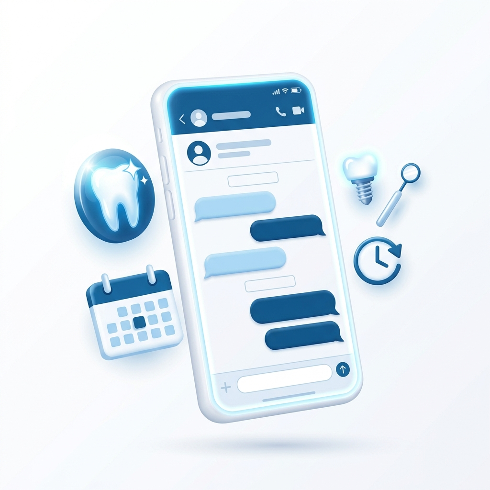

Receba leads de alto valor e agende avaliações imediatamente, sem depender de respostas manuais da recepção aos finais de semana e madrugadas.

O paciente vê seu anúncio de implante no domingo à noite, manda mensagem e só recebe retorno na segunda de manhã. Ele já esfriou ou fechou com o concorrente.
Sua equipe passa horas respondendo dúvidas genéricas de preço e convênio, enquanto pacientes particulares de alto ticket ficam esperando na fila do WhatsApp.
Falta de padronização no acompanhamento faz com que leads caros fiquem esquecidos no meio de centenas de conversas do dia a dia da clínica.
Nossa IA conectada ao WhatsApp atende seus pacientes em menos de 3 segundos. Ela tira dúvidas sobre tratamentos, faz a triagem inicial (ex: pergunta se usa prótese ou se tem dor) e agenda avaliações de implante diretamente na sua agenda.
A automação apoia a sua equipe. Ela trabalha como um filtro incansável para que a sua recepção foque apenas em confirmar presenças, fechar orçamentos complexos e encantar quem já está presencialmente na clínica.
Simulação de fluxo contínuo de captação e agendamento.
Agende avaliações de implante e lentes de contato mesmo durante a madrugada ou finais de semana.
O paciente que veio do anúncio é atendido instantaneamente, aumentando drasticamente a taxa de conversão.
A IA qualifica o lead fazendo perguntas chave antes de passar para a sua equipe, evitando perda de tempo.
Sua equipe humana fica livre para focar no atendimento presencial e na aprovação de orçamentos altos.
Entendemos o fluxo atual da sua clínica em São Paulo e definimos os tratamentos de maior margem para focar.
Desenhamos a árvore de respostas e o tom de voz ideal e humano para a sua marca.
Nossa equipe técnica constrói a inteligência e conecta de forma segura ao seu número de WhatsApp.
Realizamos testes práticos e treinamos a sua recepção para acompanhar a nova ferramenta.
Problema: Clínica investia R$ 5.000/mês em anúncios, mas a recepção só respondia os leads no dia seguinte, perdendo as vendas de domingo.
Solução criada: Bot de qualificação de WhatsApp focado exclusivamente em agendamento de avaliações de implante, com linguagem empática.
Resultado esperado: Aumento na velocidade de resposta e triplo de avaliações pré-qualificadas na agenda de segunda-feira.
Estruturação completa da inteligência no seu WhatsApp.
Não. A automação é conectada diretamente no número de WhatsApp (Business) que você já utiliza hoje para falar com seus pacientes.
Sim. Esse é o principal benefício da nossa solução. Ela atende, qualifica e agenda avaliações 24 horas por dia, 7 dias por semana.
Com certeza. A sua recepção tem total liberdade para pausar a automação (ou a IA pausa sozinha se não souber a resposta) para assumir o atendimento humano.
Seguimos rigidamente as diretrizes da LGPD (Lei Geral de Proteção de Dados). As informações de saúde e contato ficam protegidas e seguras.
Garanta que todo paciente que te chamar no WhatsApp receba um atendimento premium em segundos.
Falar com um especialista no WhatsAppConversa inicial sem compromisso. Avaliamos se o seu consultório tem perfil para a solução.